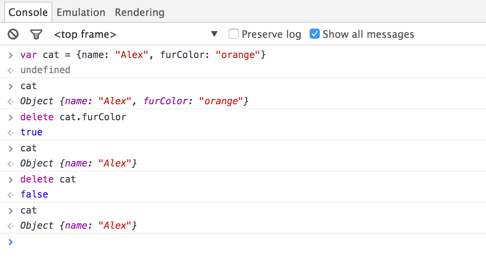
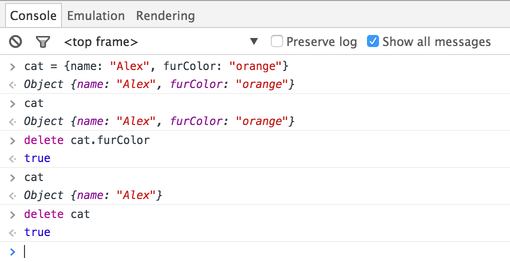
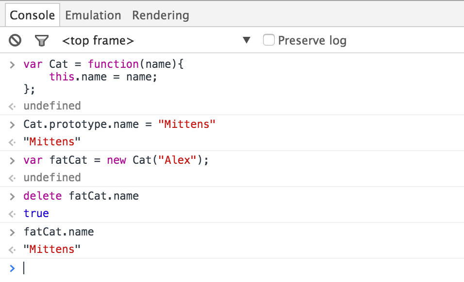

I’ve recently become a Chapter Leader for Girl Develop It in Atlanta. In case you’re not familiar with Girl Develop It’s mission, it provides affordable programs for adult women interested in learning web and software development in a judgment-free environment.
This month I’ve been able to sit in on our Intro to JavaScript class. It is a high level overview of JavaScript’s core concepts. The third class introduces Objects. A lot of the deeper learning from the course comes from questions asked by students. When going over changing properties on Objects, there was a segment about deleting properties on Objects.
1 | var aboutMe = { |
This prompted a question from a student, “Can you delete the object aboutMe?”
This is an interesting question, that deserves an in-depth answer. For those looking for a direct answer, the answer is no. You can never delete objects in JavaScript. For those curious into the whys, continue reading.
Let’s first look up what the delete operator actually does.
The delete operator removes a property from an object.
– Mozilla Developer Docs
This seems pretty straightforward. The delete operator expects an expression that evaluates to a property reference of an Object. I went ahead and attempted to delete an Object myself to see what the result is.

As you can see, my cat Object still exists even after calling delete cat. Also note that delete returns false when a property can not be deleted.
Curiously enough, if I were to execute this same code without using var while creating my cat object, delete cat returns true.

This is because an undeclared assignment (one without var) creates a property on the global object (window). Since cat was assigned as a property on window, it becomes deletable like any other property on an object.
But, why can’t I delete an Object?
You don’t ever really need to delete objects. Objects are garbage collected. This means that they will be free’d from memory automatically once there are no more references to the object or the object’s properties (unlike languages like C).
What about Object constructors?
I wish that I could say that deleting properties was as straightforward as just calling delete on any Object’s property and being done with it, but there are special cases that need consideration when using Object constructors.

In the code above, you can see I have a class called Cat. I then set Cat.protoype.name = "Mittens". After constructing a new instance fatCat from my Cat class, I delete fatCat.name. Now when I log out fatCat.name, it returns…”Mittens”.
So, what happened? Why is the name still “Mittens”?
When we instantiate new Objects from a Constructor, we refer to these objects as “Instances”. Instances inherit their properties from their Constructor (also known as a Class). When we assigned this.name = "Alex" we really assigned the name property to only the fatCat Instance. This means the fatCat instance has its own property called name.
When we deleted name from fatCat, this removed its own property and the instance went back to inheriting the name property from its Constructor’s prototype.